In Sulawesi Sent: 29 Dec 99 01:28 GMT
web version, with
|
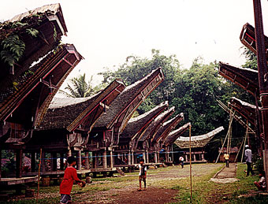 |
| Prior Trav-E-Log: JogjaSolo | Sulawesi is ... cloves and coral and Rantepao .... |
(Note:) This is the 14th in a series of Trav-E-Logs sent while traveling in S.E.Asia between Oct 16, 1999 and Jan 22, 2000.Hi folks,
Sorry I missed you all for Christmas, but I had no idea Sulawesi had so few Internet sites. So here goes: A belated Merry Christmas to all! Now, on with the show, starting about mid December.
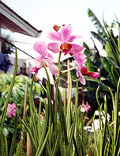Spent two pleasant days in Makasar (Ujung Pandang) seeing the sights and planning out the next phase of my journey. This city was once the capital port of the spice trade, and has recently re-adopted its former name. A trip to the Pelni office confirmed that the shipping schedule has been thrown into chaos ostensibly due to ships being used to ferry refugees from Ambon to Sulawesi, and possibly some Timor action as well. I was quite surprised to see burned out areas of the city in Makasar, as seen earlier in Yogya -- government run handicraft stores. Found the walk to Fort Rotterdam and museums to be rather lack-luster, but just walking around the city and talking to the people was much more rewarding. Also visited the Clara Bundt Orchid Gardens and shell collection, famous for exotic hybrids. When I finally figured out which unmarked house it was, the lady answering the door said the garden was her late father's, but that the shell 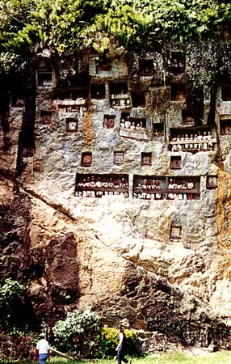collection was her hobby. A donation box and guest register was by the door to the shell collection. The huge back yard was totally planted in orchids with a few trees. She explained that most of the orchids had recently been cut and sent to many florists, but I was welcome to look around, especially at the back where a few orchids were in bloom. I took a few pictures, rushed through the coral & shell collection, and went to the post office to use the Internet café, sending the "JogjaSolo" Trav-E-Log.
Finally decided to take the 8 PM, 10-hour night bus to the town of Rantepao,
the focal center of the Tana Toraja culture. These folks are mostly Christians,
but retain much of their traditions for funerals and burial ceremonies.
Graves are cut into the sides of cliffs, and often burial is with many
worldly possessions. Thus to prevent looting, Tau-tau (wooden carvings
of human figures) are also placed around the entrance. Many human skulls
and bones are scattered around in several locations, and some of the coffins
are seen suspended on rotten poles stuck into the cliffs. Broken coffins,
with the contents pouring out, are also seen. Stayed at the Marlin hotel,
which normally caters to Indonesians rather than foreigners. It was an
enjoyable stay, as the evenings were surprisingly cool given the elevation
and closeness to the equator. Highlights included taking a bemo some 15
km out of town, hiking up to one of the gravesides, and then following 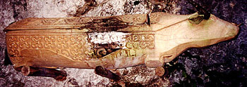a
maze of backcountry trails back to town. Kept asking directions to the
next village, and followed the hand pointing, until I came up to the main
highway. Oh well, only missed two villages. Started the next morning at
6 AM, packing up and eating breakfast across the street so that by 7 AM
I was in a becak headed for the closer village I had missed the day before.
Unfortunately, the hill was too steep for the driver, so we parted company
about half way to my goal. This village was built in the traditional style
with large living quarters facing smaller rice 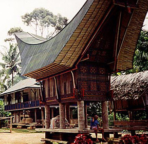barns
and other utility buildings. Roofs are styled like the head and horns of
the water buffalo. The only modern conveniences noted were volleyball net
and telephone line. The pictures will tell more when I post them on the
web. Behind the village were more graves, including one which was that
of a great local statesman. Hitchhiked back to town by 8 AM, then bought
a ticket for the 9 AM bus to my next destination.
Arrived in Tentena close to midnight, so the bus dropped me off
at the only hotel in sight. When I walked up to the door and saw a resort
environment, I back tracked to the bridge the bus had passed, crossed it,
and after 15 minutes of walking with flashlight, found the hotel at which
the bus was supposed to drop me. At the front desk, the Ue Datu told me
the book was way out of date with a price of 15,000 rupia, as they now
charge 40,000 minimum. He showed me the room with full tiled private bath,
and agreed to 20,000 as a 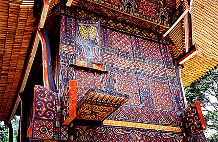special
for me.
Woke up the next morning to the sound of Christmas carols, which was certainly a pleasant change from roosters. The folks were super friendly and helpful, and breakfast was included in the price. The hotel and bungalows are set in a beautiful garden overlooking the clear Poso River. Walked down to the caves, and around the friendly town, enjoying the aroma of drying cloves everywhere. I have never smelled a sweeter town in my life. Went back to the Ue Datu for a late lunch, and found the best way to get to Ampana was to leave on a 7 or 8 AM bus. So asked to 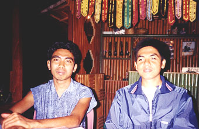stay another night, and volunteered to pay 40,000 rupia for each night. It was well worth it, and I enjoyed hearing the carols sung by the church choir next door, three times a day. The religious make up the hotel staff was 50% Muslim and 50% Christian, just as in the hotel in Makasar.
Next stop was Poso, just two hours away, where I made reservations for the 3 PM bus to Ampana. Then over to the Pelni office to make reservations for the December 29 ship to Flores, traveling one step better then economy this time. First I was told that this class D Pelni office could not sell tickets for ships leaving Makasar. When they saw this was a big problem for me, the office chief was called in from home. He saw my predicament, and agreed to call Makasar to see what could be done. Good thing. All tickets were sold out, so I would have to travel economy, and the departure date had been delayed one day. I thanked him graciously, and acknowledged that he had come in just to take care of my problem. With so many Muslims and Christians 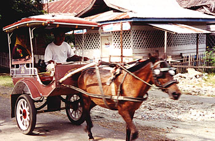traveling at the same time, I decided to make reservations for my December 27th return to Makasar journey on a big A/C bus with legroom. The Litha bus office was happy to take my money, and noted I got one of the last three tickets left. I really don't like planning that far in advance, but in this case it was essential. Now with the travel arrangements taken care of, started looking for an Internet café, as it was December 20, and time to send out Christmas greetings. Unfortunately, was told none in Poso. Looks like I may go three weeks or more with no communications.
On the trip to Ampana, met an Austrian man by the name of Fred. Actually, I met him by tossing rambutans around the bus to anyone who wanted them. Went through a half kilo in about 10 minutes, and made about 10 new smiles. The bus passed through several areas where flash floods had washed out the road. About 5:45 PM, the bus stopped at a string of roadside stands, the engine was turned off, and the driver left the bus. This is the usual signal for a dinner stop, but strangely, none of the passengers got off the bus. Except Fred and I, who ordered dinner, knowing we were three hours away from our destination. We quickly ate, and watched the sun set as we waited for the driver to return to the bus. But as soon as the sun set, the bus unloaded, and everyone ordered dinner. This region is reported to be half Muslim and half Christian, and yet everyone else on the bus was observing the Ramadan fasting rules. Three hours later, as we pulled into Ampana, Fred and I decided to share a double room at the Oasis, as there was only one single left. Also shared a beer, and then slept 'till breakfast.
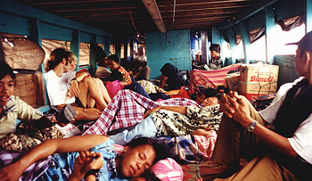Took the four-hour morning boat to Wakai, the major port in the Togian islands. The Togian islands are a group of volcanic and coral islands in the middle of the Tomini Bay of Sulawesi. Upon arrival, we transferred to another boat headed for a recommended beach resort called Paradise, on Kadidiri Island. But when we got there, the asking price was jacked up 25% over that of travelers from just 7 days earlier, so we tossed our packs over the high fence, and waded in sea water to our chests to the neighboring two resorts. There we were warmly greeted with friendly smiles, and lower prices. Best decision in a long time.
Both Fred and I stayed at the Wakai cottages/Black Marlin dive center, along with 10 to 14 other guests over the next 5 nights. My straw shack had two low wooden bed frames with foam mattresses, two shutters, and a door with hasp. Not very secure, but with such a small group of people, you quickly make friends with everyone, and trust comes naturally. Six of the shacks shared a common mandi and toilet, while all the other shacks had private baths. But the best part was wonderful coral beds and reefs, starting just 10 feet from the white sandy beech in front of our cottages. This was better than my snorkeling trip to Palau Perhentian in Malaysia seven years ago, because of the varied underwater topography, as well as number, size, and color of fish. An old, heavy boat with paddles was at our disposal, and short (free) motor boat trips to nearby locations were arranged almost daily. Three meals a day were included in the price of 25,000 rupia ($4). Diving is much more expensive -- $40 for two dives - but I'm more than happy to stay near the surface, with an occasional excursion 8 to 10 foot down. Every meal was a new treat, including overcooked fish twice a day. Breakfast was usually meager from a volume standpoint, and generally included some sort of doughy substance, which changed flavor each day. But it was not oily, and held me over to noontime when I would pack away the rice. Powerfully hot and flavorful chilly sauce was served at most evening meals.
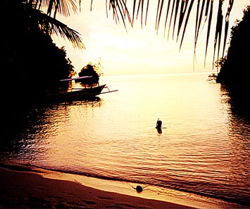Went out the first morning and decided to trek around the island interior. Found the path so wet and slippery that I decided to try again in the afternoon with hiking shoes. An Italian couple joined me and we reached a fourth set of cottages at the opposite end of the island. Scared up a boar or two, but never saw them. Bird sightings included a possible white eagle, soaring overhead. Didn't see monkeys nor parrots, as others had reported. But the trees were fantastic, and underbrush so thick that in places little could grow on the jungle floor. Also saw wild pineapple, jackfruit trees, and several areas used for making coconut oil.
Christmas was celebrated on the 24th, which I'm told is a European tradition. The woman who owns the cottages came out from town, bringing chocolate cake and excellent home baked cookies. On the 25th, we had overcooked tuna for dinner.
Guests at our cottage included 5 Americans (a male couple from N. of San Francisco, one guy from St. Paul, and Dana, originally from Salisbury, MD.), an Italian couple, one Belgian guy, and numerous folks from Germany, Austria, and Switzerland. The 4 Americans plus 2 others went on two dive trips, one to the active volcano Una-una, where sharks, turtles, and a manta ray were seen. The other dive trip was a comedy of errors. The six guests left after lunch with one boat towing the other, to the village of Wakai to get two of the three outboard motors repaired, and the third kept cutting out on the way. It took forever for the motors to be repaired. When the dive boat finally left for the B-24 wreck dive site, they could not find it. Back to Wakai for help, and a bunch of folks jumped on board to help them find the spot. When they finally found the spot, it was already 5 PM, and the divers were not certified for night diving. Two of the divers decided to dive anyway. Later, when the boat left the dive site, they had to go back to Wakai again, in the dark, as they had run low on fuel.
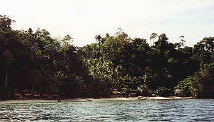Meanwhile, back at the cottages, I'm pretty worried, as dinner is served a half-hour late, at 7:30, with no word from the dive boat. While eating, a two-way radio is fired up to talk to the folks at Wakai village. Shortly after 8 PM, 2 hours after sunset, I hear a boat round the head of the island. The staff had found out from talking with Wakai that the boat had returned there, and erroneously assumed they must have eaten dinner there as well. So here they come, tired, hungry, and somewhat upset, to find most of the food eaten. Fred debriefs me - and tells me of No radio, No life vests, No GPS or compass, and No lights of any type - adventure. Navigation is strictly by sight, even at night.
At 6 AM on December 26th I'm up and packing, and by 6:30 waiting for breakfast, as I was told to be ready to leave the island by 7:30. Breakfast didn't happen until 7:30, as the staff was up late last night, so decided to sleep in this morning. At 8 AM two others show up, and then a third, all for the same Wakai bound boat which gets underway at 8:15.
The Ferry to Ampana is an old wooden boat, 7 to 8 feet wide, and over 50 foot in length. The upper deck is for luggage, and the lower deck bare planks for people. Claim your space and sit on the floor. The hold is filled with durian, that highly aromatic fruit people hate or love, but all agree smells horrible, and we are starting a 4 and a half hour trip with no place to escape the smell. It gets worse as the crowded ferry gets underway, and stinks the entire time. I just hope it doesn't permeate my cloths, pack, and sack. The sea water remains crystal clear the entire crossing of Tomini Bay. Often, bands of white sand alternate with coral beds, visible all around and under the boat, and it is easy to understand why the locals feel that destroying a little coral here and there will never be noticed - there is just so much of it.
As the ferry pulls into Ampana harbor, I make my way to the harbor office to book onward transportation and lodging with Mrs. Ulfah, who has earned the name "Miss Harbor". She has set aside two rooms of her house as a home stay, and only charges 12000 rupia a night. She is an amazing bundle of energy, is also the owner of Wakai Cottages, runs the harbor office, and I'm sure more in her spare time. (Remember the Christmas cake and cookies?) Then I remember my gekko (gecko) hat, hanging from a nail on the ferry. I rush back to the dock, to find the ferry had already departed. Will the Harvest Moon dancers remember me without my hat?
As it turned out, if I had talked to Miss Harbor earlier, I would have been able to go from the island of Kadidiri, all the way to Makasar in 35 hours. But now it will take me an extra day, as I stay with her extended family in Ampana overnight. Look at the pleasant side - I get to take a bath before continuing the trip, and exercise my feet between the boat and 2 bus rides.
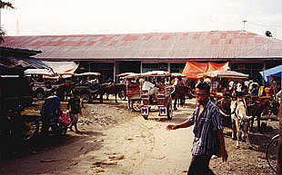Next morning I cruse around the market, but find nothing interesting. Can't even find a souvenir "tee". Then it's on to the bus station for the 5-hour trip to Poso, where I have 6 hours to wait for my next bus. First I get a bemo up to the Litha bus office to confirm my reservation, and ask them to watch my backpack while I head into town. They tell me to be back by 7 PM. Don't find a bemo heading into town, so I walk the 3+ KM. My feet need the exercise, but it must be 99% humidity and 95 in the shade, and I forgot to remove my spare hat from the pack. My first priority is to get something to eat, as it's after 2 PM, and all I've had today is a few biscuits, tea, and water. I pass the tourist information office, but it is closed, probably because of Ramadan. Down another likely street, and there to my amazement is an open-air café under several shade trees, next to an Internet café! I gobble up a big lunch, drink down a can of soda and top it off with a 600 ml bottle of water. The Internet café (15000 rupia an hour) tells me that they have been unable to make connections with the server, and I tell them fine, can I just type and save to my disk? For 2000 rupia an hour? They agree, and actually insist on virus checking my disk before letting me use it. Windows 98 and Word 2000. This place is really on the ball! So I type this long message, save to disk, and go back to the café next door and order dinner. Can I use your bathroom while waiting? Yep, so I take a sponge bath! Now I'm ready for the 21-hour Litha bus trip.
Or so I thought. The premium bus looks good on the outside, but the inside is rather beat up. The covering on the seats is full of holes, and when I sit in my seat, I feel the curves in the springs below me, and the metal bar at the seat's edge will interfere with circulation in my legs. I guess I need more natural padding down there. Unusual, an AC bus with windows that open, even though the one next to me is jammed and won't slide open. As the bus gets under way, on comes the blasting stereo, and the AC seems to take a long time to cool the bus down. An omen of things to come. About midnight he turns off the AC. I think, "this is an intelligent, fuel saving step". At 2 AM, we stop for an hour-long breakfast for the Muslims. (They fast from about 4 AM to about 6 PM during Ramadan.) I take this opportunity to walk around and look at the stars, and spot both the Big Dipper and the Southern Cross in opposite directions. By 7 AM, the bus is roasting, but the driver doesn't turn the AC back on. At 9 AM, we stop for Christian breakfast at a Litha office. Only thing on the menu is fried rice, which is fine with me. We get back on the bus, and I go up to the driver and ask for the AC. He turns it on, but it can't keep up with the heat of the sun. It's at least 85 in the bus, but probably better than having the windows open. Because of Ramadan, the only one smoking on the bus is the driver. We stop for lunch, but I pass, exercising my legs and feet instead. About an hour out of Makasar, the driver stops the bus in the middle of the highway, and takes out a tool bag. He proceeds to change the alternator belt, which was no easy task because three other belts must be removed to get the new belt on. For 45 minutes we block the southbound lane, when it would have been easy to pull the bus off to the side of the road. This is common practice here, and was also common practice in Iran. (I don't understand this, but have learned to accept it.) Arrived at the Litha bus office in Makasar shortly after 6 PM.
Happy New Year to all. It may be another week or two before I see another
Internet Cafe!